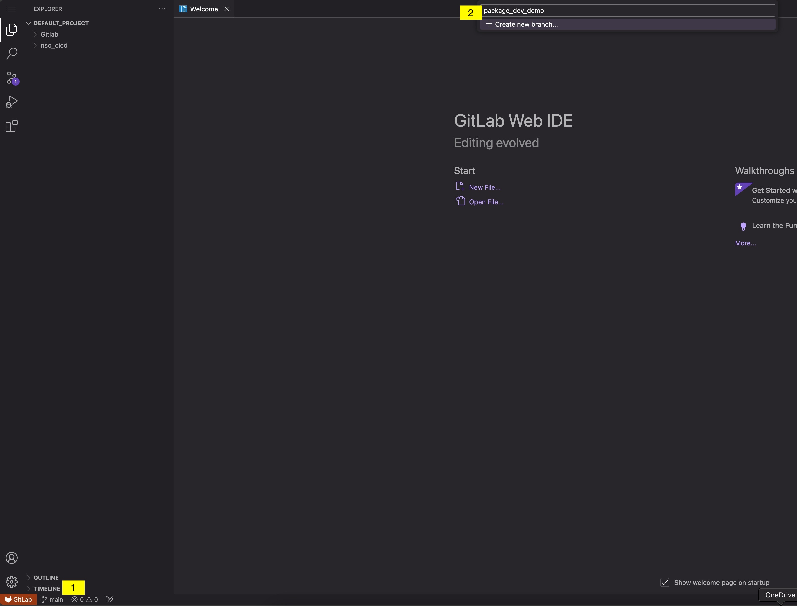
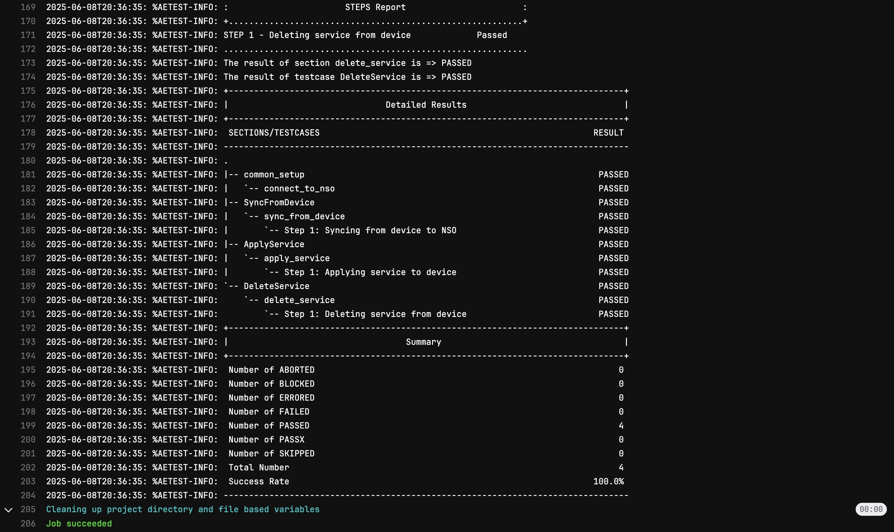

Pipeline-Driven NSO Service Development
After understanding the concept of a pipeline and its stages, we'll move on to modifying the NSO package service in the nso_cicd/packages/loopback directory. Our GitLab CI/CD pipeline will automate the verification process by compiling the package and performing a compatibility (smoke) test with the current NSO version.
The pipeline will also automate the deployment of the package service in the NSO development environment and run tests using Python and PyATS. Once all pipeline stages complete successfully, you can confidently deploy the changes to the production environment.
Task 3: Create a Test Branch
Reminder: What is a branch?
In Git, a branch is a lightweight, movable pointer to a commit. Branches allow you to create separate lines of development within a repository, enabling you to work on different features, bug fixes, or experiments simultaneously without affecting the main codebase. Branches are central to most version control workflows, making parallel development and collaboration easy. Developers can experiment and innovate without disrupting stable code.
Key Concepts:
- Default Branch: The main line of development, usually called main or master.
-
Feature Development: Create new branches for each feature, bug fix, or task. This isolates changes from the main branch until they're ready to be merged.
-
Branch Creation: Use
git branchorgit checkout -bto create and switch to a new branch. -
Switching Branches: Use
git checkoutto switch between branches. -
Merging: Once work is complete and tested, merge the branch back into another branch (typically
main) usinggit merge. -
Collaboration: Multiple developers can work on their own branches and merge changes into shared branches as needed.
Creating a test branch allows you to make changes safely without impacting the production NSO service package stored in the main branch. By committing and pushing changes to this test branch in GitLab, the pipeline will automatically compile, test, and deploy the NSO package to the development environment and execute the test scripts. You can then review the pipeline's pass/fail status to ensure your changes are successful.

You should now have a new branch called package_dev_demo and be working on that branch.
Task 4: Update the NSO Loopback Template
Reminder: What is a template, and how is it different from a model?
YANG models and templates together enable full lifecycle management of network services—from design and deployment to monitoring and troubleshooting. This combination allows network operators to define services once and deploy them consistently across diverse network environments, scaling operations efficiently. YANG models and templates are integral to NSO's automation capabilities, allowing for rapid deployment and modification of network services, and reducing the need for manual intervention.
Key Concepts: - Configuration Generation: Templates in NSO generate device-specific configuration snippets from the abstract service definitions provided by YANG models.
-
Device-Specific Customization: While YANG models define the abstract structure, templates handle the nuances of various device types and vendors, allowing NSO to push the correct configurations to different devices.
-
Separation of Concerns: Templates separate service logic from device-specific syntax, making maintenance and updates easier.
-
Reusable Components: Templates can be reused across different services, promoting consistency and reducing duplication.
To complete the development of the Loopback service and ensure all tests pass, modify the file loopback-template.xml located in /nso_cicd/packages/loopback/templates. Include the XML configurations as specified below, making sure they match exactly:
Question: Why do we need to define different interface templates for IOS and IOS XR?
<config-template xmlns="http://tail-f.com/ns/config/1.0"
servicepoint="loopback">
<devices xmlns="http://tail-f.com/ns/ncs">
<!-- DEVICE -->
<device>
<name>{/device}</name>
<config>
<!-- IOS -->
<interface xmlns="urn:ios">
<Loopback>
<name>{/loopback-intf}</name>
<ip>
<address>
<primary>
<address>{/ip-address}</address>
<mask>255.255.255.255</mask>
</primary>
</address>
</ip>
</Loopback>
</interface>
<!-- IOS-XR -->
<interface xmlns="http://tail-f.com/ned/cisco-ios-xr">
<Loopback>
<id>{/loopback-intf}</id>
<ipv4>
<address>
<ip>{/ip-address}</ip>
<mask>255.255.255.255</mask>
</address>
</ipv4>
</Loopback>
</interface>
</config>
</device>
</devices>
</config-template>
Task 5: Update the GitLab Pipeline
Now it's time to make our pipeline actually do something! For this workshop, we'll use a pipeline to package an NSO loopback service, perform validation, and apply the service to a device.
To enhance practicality and efficiency, you can replace your CI file with the pipeline below and commit the changes. Don't worry too much about the details of each task; if we have time at the end, we can revisit the functions.
Question: Which stages will run when making changes in our test pipeline?
| Gitlab runner .gitlab-ci.yml | |
|---|---|
1 2 3 4 5 6 7 8 9 10 11 12 13 14 15 16 17 18 19 20 21 22 23 24 25 26 27 28 29 30 31 32 33 34 35 36 37 38 39 40 41 42 43 44 45 46 47 48 49 50 51 52 53 54 55 56 57 58 59 60 61 62 63 64 65 66 67 68 69 70 71 72 73 74 75 76 77 78 79 80 81 82 83 84 85 86 87 88 89 90 91 92 93 94 95 96 97 98 99 100 101 102 103 104 105 106 107 108 109 110 111 112 113 114 115 116 | |
Note: For more details on the pipeline configuration, see the GitLab documentation.
Navigate to http://devtools-gitlab.lab.devnetsandbox.local/developer/nso_cicd/-/pipelines in your web browser to view the status of the pipeline.
This process may take a few minutes to complete. While the stages are running, review the completed ones to see what is happening.
What was the outcome of the testing phase?
Is the loopback service available in the development NSO instance?
